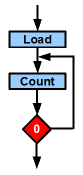

Path:
Home =>
AVR overview =>
Time loops => with a 24 bit triple register


Time loops with 24 (and more) bit registers in AVR assembler
With the knowledge of the 8 and 24 bit timing loop construction we now can add even
more registers to our loop to cover even longer times.
Source code of a 24 bit time delay loop
A timing loop with 24 bits goes as follows:
; Registers
.def rCnt1 = R1
.def rCnt2 = R2
.def rCnt3 = R3
.def rCmp1 = R4
.def rCmp2 = R5
.def rCmp3 = R6
;
.equ c1 = 65536 ; The delay constant
;
Main:
Delay24:
ldi R16,BYTE3(c1) ; Load byte 3 of c1
mov rCmp3,R16 ; to R3
ldi R16,BYTE2(c1) ; Load byte 2 of c1
mov rCmp2,R16 ; to R2
ldi R16,BYTE1(c1) ; Load byte 1 of c1
mov rCmp1,R16 ; to R1
clr rCnt3
clr rCnt2
clr rCnt1
LoopM1: ; 10 clock cycles
nop ; +1=11
nop ; +1=12
LoopM2: ; 12 clock cycles
nop ; +1=13
nop ; +1=14
Loop: ; 14 clock cycles
cp rCnt1,rCmp1 ; Start cycle counter, 1
brne Loop1 ; +1/2=2/3
cp rCnt2,rCmp2 ; +1=3
brne Loop2 ; +1/2=4/5
cp rCnt3,rCmp3 ; +1=5
brne Loop3 ; +1/2=6/7
rjmp LoopEnd ; +2=8
Loop1: ; 3 clock cycles
nop ; +1=4
nop ; +1=5
Loop2: ; 5 clock cycles
nop ; +1=6
nop ; +1=7
Loop3: ; 7 clock cycles
inc rCnt1 ; Count the lowest byte down, +1=8
brne LoopM1 ; +1/2=9/10
inc rCnt2 ; +1=10
brne LoopM2 ; +1/2=11/12
inc rCnt3 ; +1=12
rjmp Loop ; +2=14
LoopEnd:
; End of loop, execute further
The following is different from the previous 8- and 16-bit sources:
- The counter value is in three ordinary registers, below R16. This was decided
to protect more valuable registers (such as 16-bit pointer registers or R25:R24)
or registers from R16 upwards from this use.
- The counter counts up, not down. That is because when counting down no flag is
available that detects an "underflow" (when the byte rolls from zero
to 255).
- The compare value, where the counter has reached its end, is in three additional
registers, so lots of LDI instructions are unnecessary, simplifying the code and
increasing its understandability.
- Consider the counter value is below 256 from the early beginning. The counting
would have to end if the two upper bytes are already at zero. That would require
lots of compare work.
- To avoid having to multiply the three byte values with different factors, all
three components cause the same number of instructions. That meant inserting NOPs
to adjust the execution steps to an equal number of clock cycles, no matter if
they are increased or not in a single count cycle. This allowed calculating the
number of clock cycles by multiplying c1 with a constant (the number of clock cycles
in each counting round) and adding a simple displacement (the number of clock
cycles when c1 is zero).
In this formulation each counting round takes 14 clock cycles. If c1 = 0, then 21 clock
cycles are necessary. So, to get the number of clock cycles for a given counting constant,
use:
nclock = 14 * c1 + 21
To get c1 for a given number of clock cycles use:
c1 = (nclock - 21) / 14
Or, in integer math, with rounding:
c1 = (nclock - 21 + 7) / 14 = nclock / 14 - 1
The largest number that c1 can be is 256 * 256 * 256 - 1 = 16,777,215, resulting in
234,881,031 clock cycles delay. That means 234 seconds or 3.9 minutes at 1 MHz
clock.
You need even longer times, hours, days, monthes or years? No problem, add a few
additional bytes to the counter and compare values, ensure that the extended compare
section and the count section of the source code have a fixed number of clock cycles
and you're done.
Who said that assembler is simple? Counting clock cycles even in the 234 million
range is not that complicated, as it seems, even in a small 8-bit AVR.
And, who said that assembler is complicated? Those Arduino-C++ guys discuss for hours
and hours how they could resolve the issue. Their discussions focus on "What
clock frequency has my Arduino?" and "Isn't there a library available
that can delay execution?" and "What do I have to do to set up a software
timer that waits 10 ms?". All questions that an assembler programmer does
not have: he tailors its own loops, and is done long before the C++ discussers end in
their selfmade chaos.
To the top of that page
©2009-2019 by http://www.avr-asm-tutorial.net